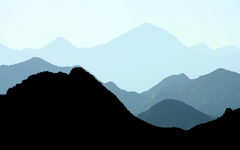

Nick Warren - ncwarren - Genetic Algorithm
When I started the assignment, I went through several different ideas and base pictures, but I always felt like the work I was doing was to get good results for that specific picture. I wanted somehting that could be more general, and also very accurate. So, I started looking at mountain and cityscape sillhouettes. The shape would be simple, several points evenly spread across the canvas, where the heights are a single point in each gene. I started with black and white images, and got very good results. The mountain shapes can be replicated pretty easily. Color became more difficult, as it would regularly climb local maxima with innaccurate results. One improvement to this was having the all height points in the initial generation start at the center of the canvas, rather than randomly. This prevented tall spakes in my shape that would try an replicate sky colors. Ideally my program should work with any mountain or cityscape picture, given the horizon is at the bottom of the photo and there is a reasonable contrast between the sky and objects.
